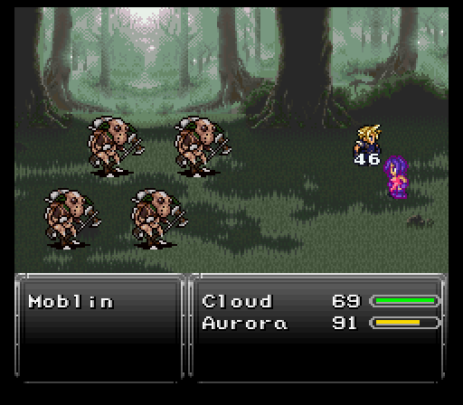

Part 2: Castle in the Desert
The trek
We're to head to Durandal Castle and meet with the king. Getting there is done simply by going south, then east, then north while hugging the edge of the mountains and eventually the ocean. You should spot Durandal Castle just as you begin hugging some mountains going north. Enemy wise, I got really lucky and only ran into weak sauce enemies like Slimes & Blue Scouts.

Be careful of the forested areas, where stronger monster packs usually lurk. One rare encounter in particular that can be rather brutal this early on when our party consists of just two characters, is a pack of four Moblins - they're fast, hit fairly hard, and can be difficult to run from. Oh, and they can use Energy Web (inflicts stop)... so it might be better to simply avoid the forests all together for now on the harder difficulties. Although the battles are entirely winnable, unless you get unlucky and fall into a back attack, in which case you'll wanna run away (hold L+R) from the onset of battle to avoid certain death.
Now would be a good time to mention another feature of this mod called step-healing.
About step-healing: Characters will heal a small amount of HP (depending on the Stamina stat) from simply walking/taking a step in most places (besides towns), including the overworld. Only if a place is deemed 'too hot' or 'too cold' and in some other rare cases will the step-healing cease to function. This helps with the usual need to heal after every battle.
The desert features Sand Stings and Sun Spiders, the former of which can inflict poison and the later seizure, as well as heal themselves and other monsters with Sun Bath. Since both are weak to ice, you'll want to multi-target Aurora's Icicle spell while Cloud attempts to slice them in half with his Buster Sword to instantly kill them. There is a Chocobo Stable located here in the trees if you don't feel like hoofing it the rest of the way.


Durandal castle
Upon entering Durandal Castle, there's lots to check out and it's where the remainder of this segment takes place. At first, there's not many places you can go. You're basically railroaded into heading towards the throne room, but there's some shops to browse too. You'll want to pickup some Potions and a couple Karma Jolts from the item shop before the next dungeon.

Once you've looted everything you can, head up into the throne room to find the king. He introduces himself as Serin and his not pleased about the empire's actions, especially considering what Aurora went through.

Once he & Cloud leave the room, you'll gain control again. Two guards that were blocking some doors outside now move, letting you explore the west & east wings. Make damn sure to check every suit of armor, box, and even bookshelf you run across. There's far too many treasures in this mod to attempt to list them all, so I'll just be mentioning the significant and obscure ones, it's up to you to find the rest!
First stop you'll want to make is in the west wing. In the king's bedroom, there's the matriarch of the royal family, Elenor. She mentions that Serin has a half brother by the name of Ronan who presumably left to pursue his own path after some family issues came up.
After that scene, there's a chest behind Elenor, but it's locked. Presumably only Serin can open it. Luckily he's back in the throne room so go have a chat with him...only to find out Kefka's decided to make a surprise visit, prompting Serin to go out and more or less brush him off. Clearly there's no magical death sorceress here, no way!
Also, Serin is a new party member. Put him in the front row before talking to Cloud. He's gonna devise a plan with his captain while Cloud takes Aurora to the eastern wing to rest up. Make sure Aurora is in the front row too when you get to the bedroom.

Here Cloud talks with Aurora and informs her a bit of what is going on, leaves, and Aurora falls asleep...only to have a dream flashback that seems to show a bit of her forgotten past.
After a short rest, Serin awakens to find his castle is on fire. It wasn't his chef juggling firebombs, but it was Kefka pulling more shenanigans. However, Serin one-ups him on the shenanigans by calling in some chocobos so he, Aurora, and Cloud can book it out of dodge while the castle submerges under the desert.

Kefka, who's beside himself with rage, sics a pair of Magitek Armors on the party.
Compared to what Fraust had in store, the Magitek Armors don't pull off anything nearly as vicious. Magitek Laser & Metal Kick both can do triple digit damage, but nothing that Potions can't fix. Other then that and a very bulky hp total (1620), not too bad...at first glance.
You see, the strategy here (for Insane difficulty) is to weaken both Magitek Armors equally. Once one goes down, it unlocks the Sand Storm skill for the other which hits for close to 300 damage on all party members and inflicts blind. If you're not playing on Insane difficulty, there's no need to worry about this.
Despite the bulky hp totals, Serin is going to make things much easier for me to manage and it's all due to his unique Aether command. Think Edgar's tools from vanilla more or less. Sonic Shot hits all enemies for some decent damage while Cosmic Fang also hits all enemies, but does no damage in exchange for inflicting confusion. His whole task here is to keep the Magitek Armors locked down with confusion while Cloud & Aurora chip away with Blade Beam & Spark respectively, as mechanical monsters are usually always weak to lightning.

Once the Magitek Armors reach a certain amount of HP, they'll use Revitalize and M-Tek Barrier, which will help them hold on to dear life that much longer, but it's nothing to worry about or waste a Diffusal Rod on if you purchased one from Neko. If you did, you may have taken the time to learn Dispel from it for Aurora, in which case you could simply cast it on them.
Once the Magitek Armors are dismantled and Kefka shamed for his poor planning, the next goal is set. Serin's actually working together with the Crimson Blades, a resistance group that opposes the empire. Cloud is his contact with that group and the trio is going there to enlist help from a skilled wizard, Astral.
When the world map appears again, ride south until you hit the coastline. There'll be a cave to your east which is where the journey will continue next time.